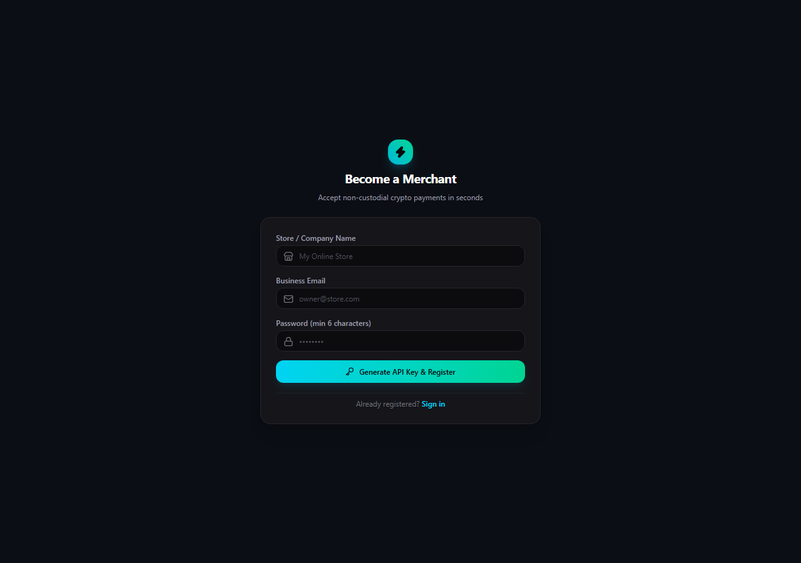
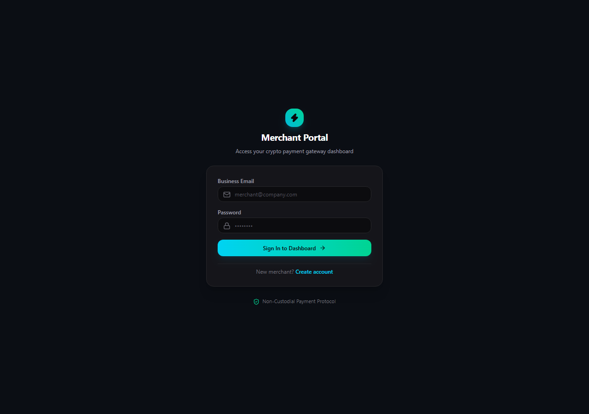
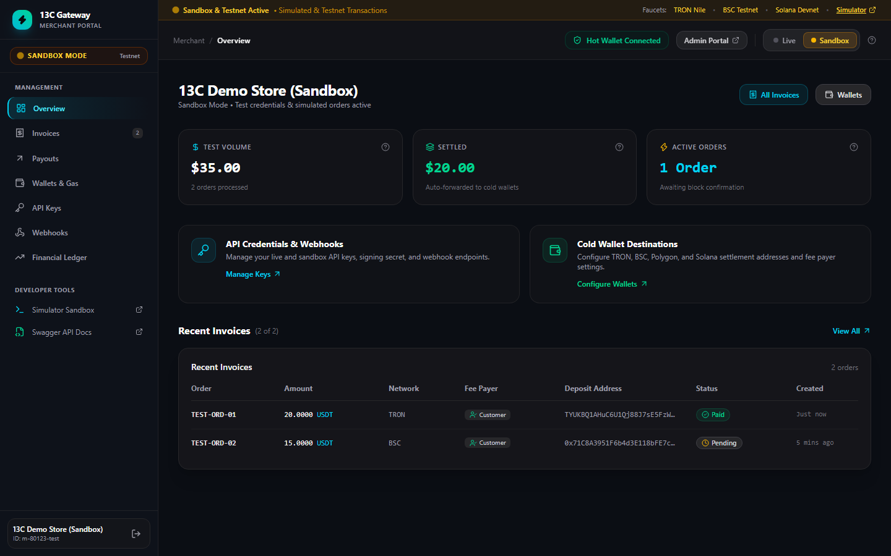
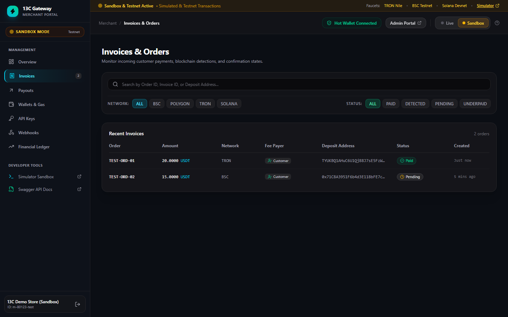
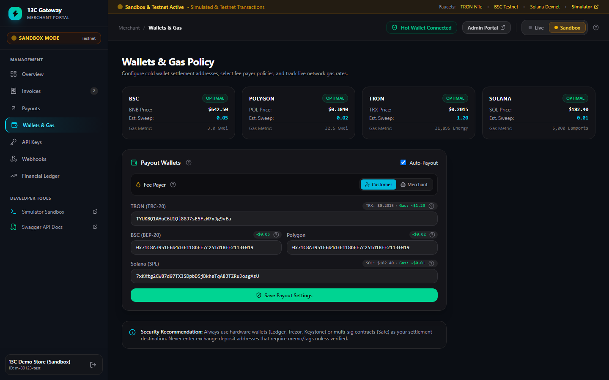
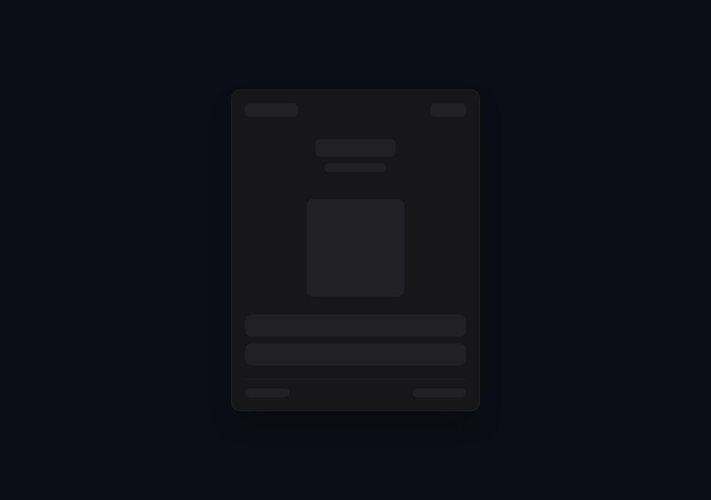
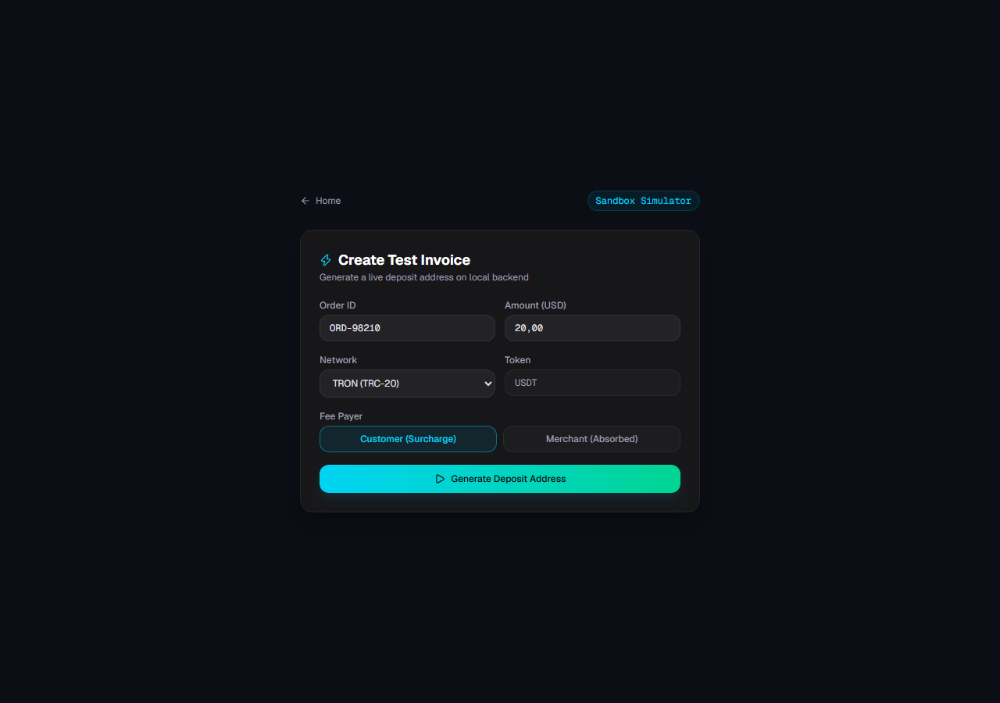
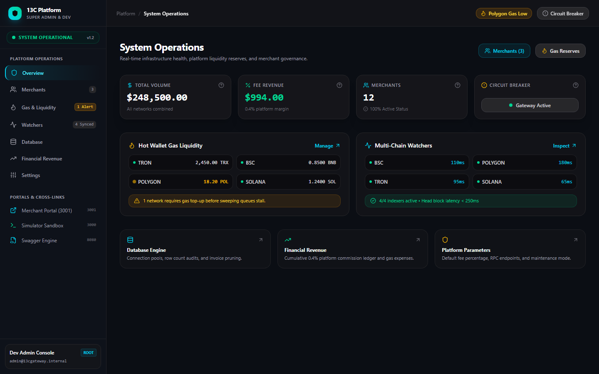
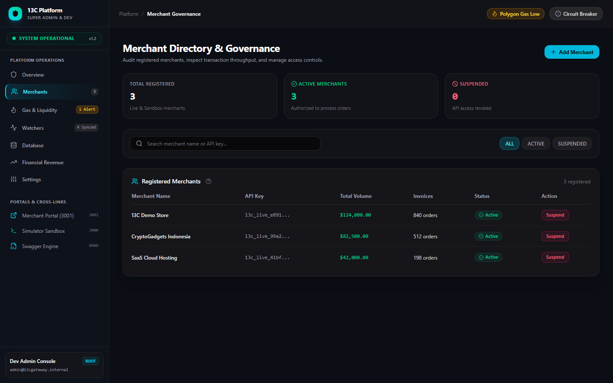
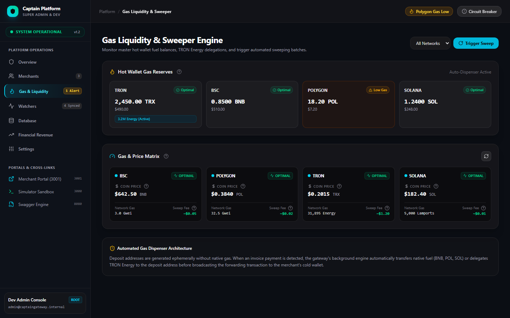

Versi: 1.6.0
Tanggal: November 2026
Klasifikasi: User Manual, Technical Specification & Integration Guide
Repositori: [https://github.com/gonzhilaz/bpg.git](https://github.com/gonzhilaz/bpg.git)
1. Bab 1: Gambaran Umum & Spesifikasi Arsitektur
* 1.1 Prinsip Non-Custodial & Kedaulatan Dana
* 1.2 Multi-Chain Network Matrix (BSC, Polygon, TRON, Solana)
* 1.3 Siklus Tagihan 1 Invoice = 1 Dedicated Ephemeral Address
* 1.4 Protokol Keamanan & API Key Hashing At-Rest
2. Bab 2: Panduan Pengguna Merchant Portal
2.1 Pendaftaran Akun & Protokol Reveal Once* API Key
* 2.2 Autentikasi & Navigasi Dashboard
* 2.3 Konfigurasi Cold Wallet Payout & Auto-Forwarding
2.4 Pengaturan Fee Payer* (Customer Surcharge vs. Merchant Absorbed)
* 2.5 Pemantauan Laporan Keuangan (Financial Ledger) & Ekspor CSV
* 2.6 Monitoring Riwayat Tagihan & Webhook Callback Logs
* 2.7 Antarmuka Modern: Filter Dropdown Ringkas, Tema Kontras Tinggi & Dukungan Bilingual
3. Bab 3: Tutorial Integrasi Toko Online (Merchant Integration)
* 3.1 Pembuatan Tagihan via REST API (cURL, Node.js, PHP, Python)
* 3.2 Menampilkan Checkout Widget ke Pelanggan
* 3.3 Penanganan & Validasi Tanda Tangan Kriptografis Webhook (HMAC-SHA256)
4. Bab 4: Panduan Pengujian Sandbox & Jaringan Testnet
* 4.1 Menggunakan Sandbox Simulator Bawaan
* 4.2 Pengujian Transaksi On-Chain Menggunakan Faucet Testnet Resmi
5. Bab 5: Panduan DevOps & Super Admin Portal
* 5.1 Dashboard Monitoring Operasional Platform
* 5.2 Manajemen Cadangan Gas Hot Wallet & Alert Otomatis
5.3 Prosedur Penyapuan Dana Manual (Manual Sweeper*)
* 5.4 Pemeliharaan Database (Pool Connection & Pruning Expired Records)
* 5.5 Emergency Circuit Breaker (Prosedur Darurat Pembekuan Payout)
* 5.6 Deployment Mandiri di Server VPS Menggunakan Docker Compose
* 5.7 Resolusi Dinamis Endpoint (Zero Hardcoded Localhost & Cloud Ready)
13C Crypto Payment Gateway dirancang untuk memecahkan kelemahan terbesar payment gateway sentralistik (seperti BitPay atau NOWPayments), yaitu risiko pembekuan dana sepihak (fund freezing) dan biaya perantara ganda.
Dengan arsitektur Non-Custodial Instant Forwarding, sistem 13C tidak pernah mengendapkan saldo merchant di akun perantara. Setiap pembayaran yang diverifikasi on-chain langsung disapu (swept) ke Cold Wallet Pribadi Merchant yang aman.
[Pembeli] ──────> [Alamat Tagihan Ephemeral] ──────> [Cold Wallet Merchant]
│
▼
[Indexer Node Memindai Event]
[Webhook HMAC Dikirim ke Toko]
Sistem secara native mendukung 4 ekosistem blockchain utama dunia dengan biaya transaksi rendah dan finalitas blok instan:
| Blockchain | Standar Token | Satuan Biaya Gas | Kecepatan Konfirmasi | Estimasi Biaya Sweep |
| :--- | :--- | :--- | :--- | :--- |
| BSC (BNB Smart Chain) | BEP-20 (USDT / USDC) | Gwei (Native BNB) | ~3 Detik | ~$0.05 |
| Polygon PoS | ERC-20 (USDT / USDC) | Gwei (Native POL) | ~2 Detik | ~$0.02 |
| TRON Network | TRC-20 (USDT) | Energy & Bandwidth (TRX) | ~1 Detik | ~$1.20 |
| Solana | SPL Token (USDC / USDT) | Lamports (Native SOL) | ~400 Milidetik | ~$0.01 |
1. Generasi Kunci Kriptografi: Saat toko memanggil endpoint pembuatan invoice, backend Go membangkitkan pasangan kunci (keypair) baru secara dinamis menggunakan algoritma kriptografi standar industri (ECDSA secp256k1 untuk EVM/TRON dan Ed25519 untuk Solana).
2. Enkripsi Kunci Privat: Kunci privat dari alamat deposit langsung dienkripsi menggunakan sandi militer AES-256-GCM sebelum disimpan ke database.
3. Masa Berlaku Tagihan: Tagihan memiliki masa aktif 15–30 menit dengan hitung mundur presisi. Alamat yang kedaluwarsa tanpa pelunasan otomatis dinonaktifkan.
Untuk menjadi merchant, kunjungi halaman registrasi di `/register`:

Registrasi Merchant
1. Masukkan Nama Toko / Perusahaan, Business Email, dan Password (minimal 6 karakter).
2. Klik tombol Generate API Key & Register.
3. PENTING (Protokol Reveal Once): Sistem akan menampilkan kartu peringatan khusus yang memuat Production API Key dan Webhook Secret.
Kunci ini hanya ditampilkan satu kali demi alasan keamanan tingkat tinggi.*
Segera klik tombol salin (copy*) dan simpan di password manager atau file konfigurasi `.env` server toko Anda.
* Di dalam database 13C Gateway, API Key disimpan dalam bentuk hash SHA-256, sehingga kunci asli tidak dapat dibaca oleh siapa pun jika database diretas.
Kunjungi halaman login di `/login`:

Login Merchant
1. Masukkan email bisnis dan password yang telah didaftarkan.
2. Setelah berhasil masuk, Anda akan diarahkan ke Merchant Portal yang dibangun dengan arsitektur enterprise modern berbasis Persistent Sidebar dan Multi-Route Navigation:

Merchant Overview
Merchant Portal dipecah menjadi beberapa rute terdedikasi:
Pada halaman Invoices & Orders:

Merchant Invoices Table
1. Pencarian Real-Time: Masukkan nomor Order ID, Invoice ID, atau Deposit Address pada kolom pencarian untuk melacak transaksi secara instan.
2. Filter Jaringan & Status: Gunakan chip navigasi untuk memfilter berdasarkan rantai blockchain (BSC, Polygon, TRON, Solana) dan status (`PAID`, `DETECTED`, `PENDING`, `UNDERPAID`).
3. Tri-State Resilience: Jika tidak ada data yang cocok, sistem menyajikan Empty State informatif lengkap dengan tombol Reset All Filters.
Pada halaman Wallets & Gas Policy:

Merchant Wallets & Gas Policy
1. Masukkan alamat cold wallet penerima untuk masing-masing jaringan:
* TRON Address: Alamat Base58 berawalan huruf `T` (misal dompet TronLink, Ledger, atau Binance).
* BSC Address: Alamat 0x EVM (Trust Wallet, MetaMask, Safe).
* Polygon Address: Alamat 0x EVM.
* Solana Address: Alamat Base58 Solana (Phantom, Solflare).
2. Pastikan centang toggle Auto-Payout aktif agar dana otomatis diteruskan begitu transaksi terdeteksi.
3. Pengaturan Fee Payer (Customer Surcharge vs. Merchant Absorbed):
* Opsi Customer (Direkomendasikan): Biaya gas jaringan ditambahkan ke total invoice tagihan pembeli. Pembeli membayar produk + gas surcharge, merchant menerima nominal bersih 100%.
* Opsi Merchant: Pembeli membayar nominal pas harga produk, biaya gas penyapuan dipotong dari saldo yang masuk ke cold wallet merchant.
4. Live Coin & Gas Matrix: Pantau harga real-time koin native (BNB, POL, TRX, SOL) serta estimasi biaya transaksi sweeping terkini.
Kartu Financial Ledger menyediakan data audit pembukuan yang transparan:
1. Filter Dropdown Ringkas (Invoices & Merchants):
* Menggantikan chip tombol yang memanjang secara horizontal menjadi komponen `
* Filter Jaringan (`All Networks`, `BSC`, `Polygon`, `TRON`, `Solana`) dan Status (`All Statuses`, `Paid`, `Detected`, `Pending`, `Underpaid`) ditempatkan sejajar dengan kolom pencarian cepat dan tombol Reset otomatis.
2. Tema Kontras Tinggi (High-Contrast Light & Dark):
* Dark Mode (Default): Palet deep carbon `#0B0E14` dan slate `#12161F` dengan aksen neon cyan/emerald untuk kenyamanan visual pengembang.
* Light Mode: Palet latar belakang putih bersih (`#FFFFFF` dan `#F8FAFC`) dengan kontras teks pekat `#09090B`, garis batas `#E4E4E7`, dan kartu data yang tajam tanpa silau.
* Tombol Pengalih: Ikon Matahari / Bulan di bilah navigasi atas (Header) dengan penyimpanan status instan di `localStorage`.
3. Dukungan Bilingual (English Default & Bahasa Indonesia):
* Tersedia tombol selektor bahasa di Header (`EN` | `ID`).
* Bahasa Inggris (`EN`) aktif secara default untuk standar internasional, dan dapat dialihkan ke Bahasa Indonesia (`ID`) dalam satu klik.
* Seluruh label navigasi, status tagihan, tooltip, dan pesan sistem diterjemahkan secara komprehensif.
Server e-commerce toko Anda cukup memanggil endpoint berikut:
bash
curl -X POST https://api.yourgateway.com/api/v1/invoices \
-H "Content-Type: application/json" \
-H "X-API-KEY: 13c_live_9a41b2c8e104f..." \
-d '{
"order_id": "INV-2026-001",
"amount": 50.00,
"currency": "USD",
"pay_currency": "USDT",
"pay_network": "TRON",
"fee_payer": "customer",
"callback_url": "https://tokosaya.com/api/crypto-webhook"
}'
javascript
const axios = require('axios');
async function createCryptoInvoice() {
const response = await axios.post('https://api.yourgateway.com/api/v1/invoices', {
order_id: 'ORD-88219',
amount: 100.00,
currency: 'USD',
pay_currency: 'USDT',
pay_network: 'BSC',
fee_payer: 'customer',
callback_url: 'https://tokosaya.com/api/crypto-webhook'
}, {
headers: { 'X-API-KEY': process.env.THIRTEENC_API_KEY }
});
const { id, deposit_address, pay_amount, pay_currency } = response.data.data;
console.log(`Tagihan dibuat: Kirim ${pay_amount} ${pay_currency} ke ${deposit_address}`);
return id;
}
php
<?php
$apiKey = '13c_live_9a41b2c8e104f...';
$payload = [
'order_id' => 'ORD-99120',
'amount' => 25.50,
'currency' => 'USD',
'pay_currency' => 'USDT',
'pay_network' => 'POLYGON',
'fee_payer' => 'customer',
'callback_url' => 'https://tokosaya.com/api/webhook'
];
$ch = curl_init('https://api.yourgateway.com/api/v1/invoices');
curl_setopt($ch, CURLOPT_RETURNTRANSFER, true);
curl_setopt($ch, CURLOPT_POST, true);
curl_setopt($ch, CURLOPT_POSTFIELDS, json_encode($payload));
curl_setopt($ch, CURLOPT_HTTPHEADER, [
'Content-Type: application/json',
'X-API-KEY: ' . $apiKey
]);
$result = json_decode(curl_exec($ch), true);
curl_close($ch);
?>
Setelah invoice dibuat, arahkan pembeli ke halaman checkout atau pasang iframe checkout:

Customer Checkout Widget
Fitur Checkout Widget:
Ketika pembayaran pembeli terkonfirmasi di blockchain, 13C Gateway mengirimkan callback HTTP POST ke `callback_url` toko Anda dengan header `X-Signature`.
json
{
"event": "invoice.paid",
"invoice_id": "4d374131-bcca-4749-8a5e-12c802131d1f",
"order_id": "ORD-88219",
"amount_paid": "100.0500",
"pay_currency": "USDT",
"pay_network": "BSC",
"received_at": "2026-11-12T16:25:00Z"
}
javascript
const crypto = require('crypto');
function verifyWebhook(req, secretKey) {
const signature = req.headers['x-signature'];
const rawBody = JSON.stringify(req.body);
const expectedSignature = 'sha256=' + crypto
.createHmac('sha256', secretKey)
.update(rawBody)
.digest('hex');
return signature === expectedSignature;
}
Kunjungi `/sandbox` untuk menguji alur integrasi tanpa modal uang riil:

Sandbox Simulator
1. Isi form simulasi: Order ID, Nominal USD, Pilihan Network (TRON, BSC, Polygon, Solana), dan Fee Payer.
2. Klik tombol Generate Deposit Address.
3. Sistem akan memunculkan detail alamat uji coba dan tombol hijau Simulate Payment.
4. Begitu tombol simulasi diklik, backend Go akan memproses invoice seolah-olah terjadi transfer on-chain asli: status berubah menjadi `PAID`, rekonsiliasi auto-payout dibuat, dan webhook HMAC langsung ditembakkan ke URL callback toko Anda.
Jika Anda ingin menguji transaksi nyata dari dompet Web3 tanpa biaya:
1. Aktifkan jaringan Testnet pada wallet MetaMask atau Phantom Anda.
2. Klaim koin gratis melalui tautan Faucet resmi yang disediakan di banner atas Merchant Dashboard:
* TRON Nile Testnet: [https://nileex.io/join/getJoinPage](https://nileex.io/join/getJoinPage)
* BSC Testnet Faucet: [https://www.bnbchain.org/en/testnet-faucet](https://www.bnbchain.org/en/testnet-faucet)
* Solana Devnet Faucet: [https://faucet.solana.com](https://faucet.solana.com)
3. Lakukan transfer koin testnet ke alamat deposit invoice. Watcher daemon 13C di background akan menangkap transaksi on-chain tersebut secara otomatis.
Kunjungi Super Admin Portal di [https://bpg-admin.vercel.app](https://bpg-admin.vercel.app):

Super Admin Overview
Portal ini dirancang untuk DevOps dan Operator Gateway dengan arsitektur Persistent Sidebar dan rute khusus:
`/merchants` (Merchant Governance): Direktori pendaftaran merchant, audit volume transaksi, dan aksi penangguhan (Suspend / Activate*).
`/watchers` (Multi-Chain Watchers): Monitoring latensi RPC node, tinggi blok (block height*), dan status pemindaian blok tanpa smart contract.
`/database` (Database Engine & Storage): Pemantauan koneksi pool PostgreSQL/SQLite, statistik baris data, dan tombol pembersihan (prune*) invoice kedaluwarsa.
`/settings` (Platform Settings): Pengaturan persentase komisi, buffer gas transaksi, dan mode pemeliharaan (maintenance*).
Pada halaman Merchant Governance:

Merchant Directory Governance
1. Pencarian & Audit: Telusuri merchant berdasarkan nama bisnis atau awalan API key.
2. Filter Status: Filter daftar berdasarkan merchant `ACTIVE` atau `SUSPENDED`.
3. Aksi Kontrol: Klik tombol Suspend untuk memutus otorisasi API key merchant bermasalah seketika, atau Activate untuk memulihkan akses.
4. Pendaftaran Manual: Tombol Add Merchant memungkinkan DevOps mendaftarkan akun merchant baru secara langsung dari konsol admin.
Pada halaman Gas Liquidity & Sweeper Engine:

Gas Liquidity & Sweeper Engine
Pada modul Database Engine & Storage Maintenance:
Live Connection Pool & I/O Telemetry: Memantau kapasitas pool koneksi aktif, idle, queue, rasio Buffer Cache Hit* (99.85%), dan latensi kueri rata-rata (1.4 ms).
Table Storage & Bloat Inspector: Audit terperinci per tabel (`invoices`, `payouts`, `transactions`, `webhook_deliveries`, `audit_logs`) mencakup jumlah baris, ukuran data, ukuran indeks B-Tree, persentase bloat / dead tuples, dan status auto-vacuum*.
Operasi VACUUM & REINDEX: Satu klik untuk membersihkan dead tuples, menyusun ulang indeks terfragmentasi, dan memperbarui statistik biaya kueri PostgreSQL tanpa table lock*.
Mesin Pruning dengan Dry-Run Simulation: Pilihan retensi data (7, 14, 30, 90 hari) dengan tombol Simulate Dry-Run yang menghitung perkiraan baris dan ruang disk* yang akan direklamasi sebelum eksekusi permanen dijalankan.
Disaster Recovery & Compressed Snapshots (`pg_dump`): Pembuatan snapshot point-in-time instan terkompresi dengan validasi checksum* kriptografis SHA-256 dan opsi unduhan langsung.
Pada kartu Platform Overview dan halaman Platform Settings (`/settings`):
Untuk mengoperasikan backend Go dan database PostgreSQL di server VPS privat:
bash
1. Kloning repositori resmi
git clone https://github.com/gonzhilaz/bpg.git
cd bpg
2. Sesuaikan konfigurasi rahasia pada file .env
cp .env.example .env
nano .env
3. Jalankan container dengan Docker Compose
docker compose up -d --build
4. Pantau log operasional indexer blockchain
docker compose logs -f backend
Seluruh modul frontend (`dashboard`, `admin`, `demo-sandbox`) tidak lagi menggunakan URL `localhost` hardcoded. Sistem menggunakan arsitektur `getEnvUrl` yang adaptif:
- `NEXT_PUBLIC_API_URL`: URL Backend API & Watcher Engine (contoh: `https://api.domainanda.com`).
- `NEXT_PUBLIC_MERCHANT_URL`: URL Merchant Portal (contoh: `https://merchant.domainanda.com`).
- `NEXT_PUBLIC_ADMIN_URL`: URL Super Admin Portal (contoh: `https://admin.domainanda.com`).
- `NEXT_PUBLIC_SANDBOX_URL`: URL Simulator Sandbox (contoh: `https://sandbox.domainanda.com`).
- `NEXT_PUBLIC_SWAGGER_URL`: URL Dokumentasi Interaktif Swagger API.
Dokumen manual ini dihasilkan secara otomatis dari spesifikasi arsitektur resmi 13C Crypto Payment Gateway v1.3.
Pada rute Super Admin `/watchers`, administrator kini memiliki kontrol penuh untuk mengelola kluster RPC multi-rantai (TRON, BSC, Polygon, Solana, atau rantai EVM kustom):
1. Tambah Node Baru (`+ Add RPC Node`): Memungkinkan pendaftaran penyedia RPC cadangan (misal QuickNode Dedicated, Alchemy, Infura, atau node privat) dengan memilih jaringan, nama penyedia, dan URL endpoint HTTP/WSS.
2. Uji Latensi Real-Time (`Test Ping`): Tombol ikon petir mengirim kueri blok tinggi secara langsung untuk mengukur latensi round-trip (ms).
3. Penghapusan Node (`Delete`): Menghapus penyedia yang tidak stabil atau sering mengalami gangguan tanpa memutus layanan gateway.
4. Persistensi Data: Seluruh node kustom tersimpan secara aman dan sinkron antar-sesi pemantauan.
Untuk mencegah akses tidak sah pada infrastruktur inti pembayaran:
- Validasi Admin ID internal (`admin@13cgateway.internal`).
- Master Secret Key dengan batas minimum entropi.
- Kode 2FA TOTP (6-digit) yang disinkronkan dengan aplikasi authenticator RFC 6238.
- Proteksi Anti-Brute Force: Penguncian akun otomatis selama 60 detik jika terjadi 5 kali kegagalan input berturut-turut.
Untuk menjawab tantangan keamanan terhadap inspeksi DevTools peramban oleh pihak luar:
1. Penyembunyian Alamat Asli Server: Klien tidak lagi menghubungi backend Go secara langsung pada port publik. Seluruh lalu lintas dialihkan melalui Next.js Backend-For-Frontend (BFF) pada rute `/api/proxy/[...path]`.
2. Inspeksi Network DevTools Terproteksi: Pihak luar yang membuka Network Tab peramban hanya melihat rute proksi internal relatif, bukan IP server VPS, port mikroservis, atau struktur backend internal.
3. Header Keamanan Tambahan: Server proksi menyematkan header anti-sniffing (`X-Content-Type-Options: nosniff`, `X-Frame-Options: DENY`, `Cache-Control: no-store`) dan memfilter metadata rentan sebelum merespons peramban.
4. Verifikasi Tanda Tangan HMAC Kriptografis: Walaupun peramban dapat membaca header, penyerang tidak dapat memalsukan permintaan karena setiap transaksi divalidasi dengan tanda tangan HMAC-SHA256 yang membutuhkan kunci rahasia yang tidak pernah diekspos ke publik.
Seluruh panduan arsitektur kredensial basis data, parameter string koneksi SSL PostgreSQL, konfigurasi KMS hot wallet, dan template variabel lingkungan produksi kini didokumentasikan secara terpusat pada file:
👉 `DOC/SECURITY_AND_CREDENTIALS.md`
Sesuai standar keamanan industri, file rahasia asli tidak boleh di-commit secara mentah ke repositori publik dan wajib disuntikkan via Secrets Vault pada level infrastruktur VPS/Cloud.
Pada portal Super Admin `/merchants`, tata kelola merchant kini telah ditingkatkan menjadi CRUD penuh dengan kepatuhan antarmuka modern (Zero labeled text buttons; 100% `IconButton` dengan dark `Tooltip` informatif):
Edit Merchant (`Edit Profile`): Ikon `Pencil` memungkinkan pembaruan nama bisnis, status operasional, penanggung biaya gas/jaringan (Fee Payer*), dan konfigurasi webhook.
Untuk mendukung pengujian testnet sandbox tanpa batas dan toleransi kesalahan (fault-tolerance):
- TRON: TronGrid Official, Tron PublicNode, dan Nile Testnet.
- BSC: Binance Official, LlamaRPC, dan Chapel Testnet.
- Polygon: Polygon PoS Official, LlamaRPC, dan Amoy Testnet.
- Solana: Solana Mainnet-Beta dan Solana Devnet.
- Ethereum: Cloudflare ETH dan Sepolia Testnet.
Proteksi Anti-Replay Serangan Konkuren (Backend Go): Validasi ketat `tx_hash` unik pada tabel pembayaran mencegah pencatatan ganda (double-crediting*) saat pemindaian ulang blok blockchain terjadi.
Proteksi Rute Backend Admin: Middleware `AdminAuth` mengunci seluruh endpoint `/api/v1/admin/` dengan verifikasi `X-Admin-Key` dan token sesi master.
Sistem 13C mendukung mode penyelesaian dana ganda per merchant:
1. `ESCROW_BALANCE` (Default): Setiap pembayaran invoice yang diverifikasi on-chain otomatis dikreditkan ke buku besar saldo internal merchant (`BalanceUSD`). Dana tertampung aman di Master Vault platform, menghemat biaya gas fee blockchain secara masif.
2. `INSTANT_FORWARD`: Mode lama di mana setiap tagihan langsung disapu seketika ke cold wallet merchant di blockchain.
Mekanisme Penguncian Saldo Atomik: Saat permintaan dibuat, sistem secara atomik memindahkan dana dari `BalanceUSD` ke `LockedBalanceUSD` untuk mencegah pembelanjaan ganda (anti-double spend*).
Tanpa token lisensi valid yang ditandatangani developer, seluruh API gateway menolak pemrosesan transaksi dengan HTTP 402 (License Required*).
Dokumen manual ini diperbarui secara resmi untuk 13C Crypto Payment Gateway v1.6 Enterprise Edition.